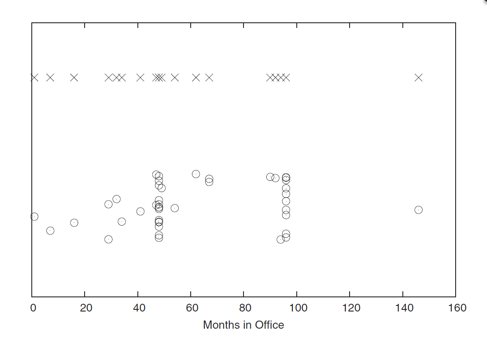
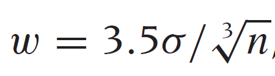
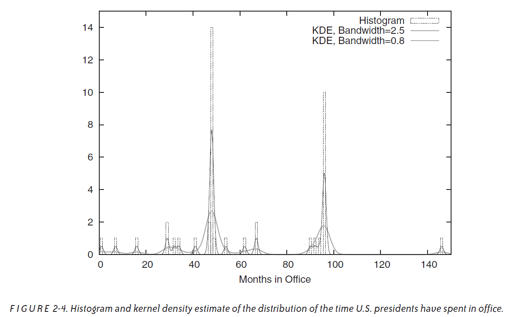

Part 1
DAOST Chapter 2 Questions
Explain in your own words the point of the jitter plot.
Jitter plots can be used to prevent overplotting. If the data has many equal values, the data plots will be placed on top of each other, especially if using integer values. In the presidents example from the DAOST book the presidents usually spend a term or two in office, i.e. 4 or 8 years. By adding random noise to the univariate data, the y-axis is utilized as well.

Explain in your own words the point of figure 2-3. (I'm going to skip saying "in your own words" going forward, but I hope you get the point; I expect all answers to be in your own words).
The jitterplot can be harder to interpret and distinquish if the amount of data becomes relatively high. One would think that a histogram would be better to show where the data is more prominent. In a histogram it's important to choose the appropriate bin sizes and anchor points. From figure 2-3 this problem is shown. Different anchor points have been chosen in the two plots on the same data and the results are very different. A first guess of the correct bin size can be chosen from Scott's rule. Histograms exceed at representing varying data, e.g. if one would make an experiment where it's expected to have data in a certain interval. If it's desired to view two similar histogram giving some small varying data the bin size and anchor point gives the benifit of aligning the data.

Using a histogram does however result in a loss of information. You can no longer read the individual datapoints and if the anchorpoints, number of bars and width have not been chosen correctly it can even constitute a gross misrepresentation of the data. Additionally, histograms are ill suited at communicating data with outliers as having several bars with a value or height of zero is undesirable.
The author of DAOST (Philipp Janert) likes KDEs (and think they're better than histograms). And I don't. I didn't give a detailed explanation in the video, but now that works to my advantage. I'll ask you guys to think about this and thereby create an excellent exercise: When can KDEs be misleading?The KDE's can be used to predict data and connections by smoothing out the existing data, as it is supposed to represent an estimation of a probability distribution. This can be good if a lot of outliers are present, or if the data collected is not very smooth, but there is an assumption of smoothness given more data. One problem of KDE's are that data can no longer be extrapolated directly from the plot since the data has been modified. In the presidents example the KDE ruins the actual data totally.

I've discussed some strengths of the CDF - there are also weaknesses. Janert writes "[CDFs] have less intuitive appeal than histograms of KDEs". What does he mean by that?
CDF's is an abbreviation of Cumulative Distribution Function, which does just that. It accumulates the total of the distribution to the left of the point. When at the end of the function the distribution should be 1 on the y-axis. It naturally answers the question, how big a chance is there of a new datapoint being to the left of this point. Which is good if you approach it with a question of say, "what is the probability of a response time of less than 1000 ms?". It is however not easily readable for humans as angles and areas are alot harder to read than distances. All in all it is difficult to conclude much from just a CDF and it works best when supplementing another plot.
What is a Quantile plot? What is it good for.
The Quantile plot is like a CDF, but with switched x and y axes. Which is beneficial when posing questions in a slightly different manner, such as "What is the likelihood of response time of 1000 ms and above?"
How is a probablity plot defined? What is it useful for? Have you ever seen one before?
A probability plot is definied by multiples of the standard deviation as the x-axis. Putting the x values into a fitting equation, the y values are obtained. The upper x-axis shows a CDF. It's easy to see outliers and to give a quick answer on how predictable the data is.
One of the reasons I like DAOST is that Janert is so suspicious of mean, median, and related summary statistics. Explain why one has to be careful when using those - and why visualization of the full data is always better.
As seen in DAOST, different datasets can result in the exact same summary statistics despite wildly different data. It can lead to trivialization of the data and false conclusions. You could perharps think two different datasets are simillar because of similar summary statistics, despite one being tightly distributed around the mean, whereas the other has a number of wild outliers, and thus a very different distribution, but some semblance of symmetry.
I love box plots. When are box plots most useful?
Box plots are useful at presenting a quick overview of the data, as it quickly relays a five factor summary with lower extreme, lower quantile, median, upper quantile and upper extreme. They can be useful for comparing datasets and to show whether a dataset is skewed or has an abundance of outliers. The larger the amount of observations, the more useful.
The book doesn't mention violin plots. Are those better or worse than box plots? Why?
Violin plots can show more than the boxplot. It carries the same information, as well as being extented with a rotated kernel density plot, which more fully shows peaks at various points in the dataset. However, they are not as popular. This makes them harder to interpret if you don't know them.